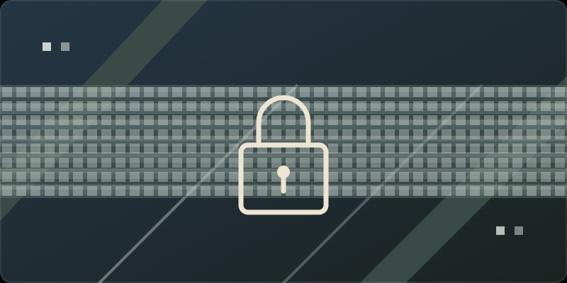
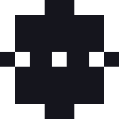

Firmware Engineer & Embedded Systems DeveloperIngegnere Firmware & Sviluppatore di Sistemi EmbeddedIngeniero de Firmware y Desarrollador de Sistemas Embebidos
Bare-metal firmware, hardware design, and embedded systems since 2001. Building real products from schematic to silicon.Firmware bare-metal, progettazione hardware e sistemi embedded dal 2001. Costruisco prodotti reali dallo schema al silicio.Firmware bare-metal, diseño de hardware y sistemas embebidos desde 2001. Construyendo productos reales desde el esquema hasta el silicio.
Work ExperienceEsperienza LavorativaExperiencia Laboral
A career spanning firmware, hardware design, iOS development, and technical consulting.Una carriera che spazia tra firmware, progettazione hardware, sviluppo iOS e consulenza tecnica.Una carrera que abarca firmware, diseño de hardware, desarrollo iOS y consultoría técnica.
Hardware design: board functionality definition, component selection. Firmware development on PIC24/PIC18 Microchip microcontrollers for web server UI and Modbus protocol. Bare-metal implementation of channel synchronization.Progettazione hardware: definizione funzionalità scheda, selezione componenti. Sviluppo firmware su microcontrollori PIC24/PIC18 Microchip per interfaccia web server e protocollo Modbus. Implementazione bare-metal della sincronizzazione dei canali.Diseño de hardware: definición de funcionalidad de placa, selección de componentes. Desarrollo de firmware en microcontroladores PIC24/PIC18 Microchip para interfaz de servidor web y protocolo Modbus. Implementación bare-metal de la sincronización de canales.
Designed DSP boards, scalar network analyzers, and spectrum analyzers. Full hardware design lifecycle: schematic capture, PCB layout, Gerber/drill/BOM production files. Firmware on dsPIC33 and STM32 in bare-metal.Progettazione schede DSP, analizzatori di rete scalari e analizzatori di spettro. Ciclo completo di progettazione hardware: cattura schematiche, layout PCB, file di produzione Gerber/drill/BOM. Firmware su dsPIC33 e STM32 in bare-metal.Diseño de tarjetas DSP, analizadores de red escalares y analizadores de espectro. Ciclo completo de diseño de hardware: captura de esquemas, layout PCB, archivos de producción Gerber/drill/BOM. Firmware en dsPIC33 y STM32 en bare-metal.
Developed and published multiple iOS applications on the Apple App Store throughout the early iPhone era.Sviluppato e pubblicato diverse applicazioni iOS sull'Apple App Store durante i primi anni dell'era iPhone.Desarrollé y publiqué varias aplicaciones iOS en la Apple App Store durante los primeros años de la era iPhone.
Technical SkillsCompetenze TecnicheHabilidades Técnicas
Languages, platforms, and tools I work with daily.Linguaggi, piattaforme e strumenti con cui lavoro quotidianamente.Lenguajes, plataformas y herramientas con las que trabajo a diario.
Programming LanguagesLinguaggi di ProgrammazioneLenguajes de Programación
- C Embedded (ExpertEspertoExperto)
- Objective-C
- C++
- VB 6.0
- Pascal
- UNIX Shell ScriptsScript Shell UNIXScripts de Shell UNIX
Microcontrollers & PlatformsMicrocontrollori e PiattaformeMicrocontroladores y Plataformas
- Microchip dsPIC33
- ST STM32
- AVR
- PIC24 / PIC18
- Bare MetalBare MetalBare Metal
- Linux
- Windows
- macOS
Tools & InstrumentsStrumenti e StrumentazioneHerramientas e Instrumentos
- VSCode
- Eclipse
- EasyEDA
- LTSpice
- Saleae Logic AnalyzerAnalizzatore Logico SaleaeAnalizador Lógico Saleae
- BusPirate
- OscilloscopeOscilloscopioOsciloscopio
- SolderingSaldatauraSoldadura
Languages SpokenLingue ParlateIdiomas Hablados
- Italian (Native)Italiano (Madrelingua)Italiano (Nativo)
- English (Good)Inglese (Buono)Inglés (Bueno)
- Spanish (Good)Spagnolo (Buono)Español (Bueno)
EducationFormazioneEducación
Academic background in computer science and electronics.Percorso accademico in informatica ed elettronica.Formación académica en informática y electrónica.
ProjectsProgettiProyectos
Personal embedded systems projects built from scratch.Progetti personali di sistemi embedded realizzati da zero.Proyectos personales de sistemas embebidos desarrollados desde cero.

An STM32-based software-defined radio panadapter for amateur radio use.Un panadapter SDR basato su STM32 per l'uso nella radioamatoriale.Un panadapter SDR basado en STM32 para uso en radioafición.
↗ STM32 Panadapter SDR for Amateur RadioPanadapter SDR STM32 per radioamatoriPanadapter SDR STM32 para radioafición →GitHub Profile

DSP-based audio processing project using the Microchip dsPIC33 microcontroller.Progetto di elaborazione audio DSP basato sul microcontrollore Microchip dsPIC33.Proyecto de procesamiento de audio DSP basado en el microcontrolador Microchip dsPIC33.
↗ Blue DSP Noise-Canceling DSP for Ham RadioBlue DSP: DSP di cancellazione del rumore per radioamatoriBlue DSP: DSP de cancelación de ruido para radioafición →GitHub: Blue_DSP

Hardware AES-256 voice encryption kit for radios and phones — no apps, no cloud, no stored recordings.Kit hardware di cifratura vocale AES-256 per radio e telefoni — senza app, senza cloud, senza registrazioni archiviate.Kit de cifrado de voz AES-256 por hardware para radios y teléfonos — sin apps, sin nube, sin grabaciones almacenadas.
↗ Visit ProjectVisita ProgettoVisitar Proyecto →CertificationsCertificazioniCertificaciones
Amateur Radio License since 1986 (Callsign: IW2NDH)Licenza di Radioamatore dal 1986 (Call: IW2NDH)Licencia de Radioaficionado desde 1986 (Indicativo: IW2NDH)
How to Hire MeCome AssumermiCómo Trabajar Conmigo
I'm available for firmware development, hardware design, and embedded systems consulting. Here's how we can work together.Sono disponibile per sviluppo firmware, progettazione hardware e consulenza su sistemi embedded. Ecco come possiamo collaborare.Estoy disponible para desarrollo de firmware, diseño de hardware y consultoría en sistemas embebidos. Así es como podemos trabajar juntos.
Ways to Work TogetherModalità di CollaborazioneFormas de Colaborar
Short to mid-term projects: firmware development, hardware design reviews, protocol implementation (Modbus, SPI, I2C), DSP board bring-up. Typical engagement: 2–6 months.Progetti a breve-medio termine: sviluppo firmware, revisioni progettazione hardware, implementazione protocolli (Modbus, SPI, I2C), messa in servizio schede DSP. Impegno tipico: 2–6 mesi.Proyectos a corto y medio plazo: desarrollo de firmware, revisiones de diseño de hardware, implementación de protocolos (Modbus, SPI, I2C), puesta en servicio de tarjetas DSP. Compromiso típico: 2-6 meses.
Technical consulting for hardware startups: component selection, schematic review, firmware architecture advice, production readiness assessment. Hourly or daily rate.Consulenza tecnica per startup hardware: selezione componenti, revisione schemi, consulenza architettura firmware, valutazione prontezza produttiva. Tariffa oraria o giornaliera.Consultoría técnica para startups de hardware: selección de componentes, revisión de esquemas, asesoramiento sobre arquitectura de firmware, evaluación de preparación para producción. Tarifa por hora o diaria.
Looking for a senior firmware engineer role. Based in Italy. Open to remote work and occasional on-site visits.Cerco ruolo da ingegnere firmware senior. Basato in Italia. Disponibile per lavoro remoto e visite occasionali in sede.Buscando un rol de ingeniero de firmware senior. Con base en Italia. Abierto a trabajo remoto y visitas ocasionales al sitio.
Get in TouchContattamiPonte en Contacto
What You GetCosa OffroLo Que Obtienes
ResourcesRisorseRecursos
Open-source firmware projects and ports I maintain on GitHub.Progetti firmware open-source e porting che mantengo su GitHub.Proyectos de firmware de código abierto y ports que mantengo en GitHub.
Firmware & DSPFirmware & DSPFirmware y DSP
- Blue_DSPDSP audio processing firmware in C for dsPIC33.Firmware C per elaborazione audio DSP su dsPIC33.Firmware C de procesamiento de audio DSP para dsPIC33.
- INDSPArduino library for the INDSP DSP board.Libreria Arduino per la scheda DSP INDSP.Librería Arduino para la placa DSP INDSP.
- morsedecodeMorse code decoder in C.Decodificatore di codice Morse in C.Decodificador de código Morse en C.
Amateur Radio & SensorsRadioamatoriale & SensoriRadioafición y Sensores
- iw2ndh_for_catsSTM32 CAT interface for amateur radio (STM32CubeIDE project).Interfaccia CAT per radioamatori su STM32 (progetto STM32CubeIDE).Interfaz CAT para radioafición en STM32 (proyecto STM32CubeIDE).
- STM32_AS7341Port of Adafruit's AS7341 color sensor driver to STM32.Porting del driver del sensore di colore AS7341 di Adafruit per STM32.Port del controlador del sensor de color AS7341 de Adafruit a STM32.
CommunityComunitàComunidad
Engaged in embedded systems communities and forums.Partecipo ai forum e alle community di sviluppo embedded.Participa en foros y comunidades de desarrollo embebido.
Active participant in dsPIC33, PIC24, and embedded firmware discussions. Share your questions or explore my discussion topics.Partecipe attivamente a discussioni su dsPIC33, PIC24 e firmware embedded. Condividi le tue domande o esplora i miei argomenti di discussione.Participa activamente en discusiones sobre dsPIC33, PIC24 y firmware embebido. Comparte tus preguntas o explora mis temas de discusión.
Check out my repositories for embedded projects, code examples, and technical documentation.Dai un'occhiata ai miei repository per progetti embedded, esempi di codice e documentazione tecnica.Explora mis repositorios para proyectos embedded, ejemplos de código y documentación técnica.
Embedded AI & AI-Assisted DevelopmentEmbedded AI e Sviluppo Assistito dall'AIEmbedded AI y Desarrollo Asistido por IA
I integrate hardware-aware AI tooling into my firmware workflow to speed up bring-up, debugging, and testing — with every result verified on real silicon.Integro strumenti AI hardware-aware nel mio workflow firmware per accelerare bring-up, debugging e test — con ogni risultato verificato su silicio reale.Integro herramientas de IA consciente del hardware en mi flujo de trabajo de firmware para acelerar bring-up, depuración y pruebas — con cada resultado verificado en silicio real.

Embedder — Hardware-Aware AI for Embedded SoftwareEmbedder — AI hardware-aware per software embeddedEmbedder — IA consciente del hardware para software embebidoI use Embedder in my firmware workflow: datasheet-grounded driver generation with cited register values, schematic-aware pin muxing, and closed-loop build-flash-test validation on real boards. It drives the bench instruments I already own — serial, GDB, logic analyzer, oscilloscope — and attaches hardware evidence to every conclusion. The AI accelerates the mechanical work; my 25 years of bare-metal experience verify the result on silicon.Uso Embedder nel mio workflow firmware: generazione di driver basata sui datasheet con valori di registro citati, pin muxing consapevole dello schema e validazione closed-loop build-flash-test su schede reali. Utilizza la strumentazione di banco che possiedo già — seriale, GDB, analizzatore logico, oscilloscopio — e allega evidenze hardware a ogni conclusione. L'AI accelera il lavoro meccanico; i miei 25 anni di esperienza bare-metal verificano il risultato su silicio.Uso Embedder en mi flujo de trabajo de firmware: generación de drivers basada en datasheets con valores de registro citados, pin muxing consciente del esquema y validación en ciclo cerrado compilar-flashear-probar en placas reales. Utiliza el equipo de banco que ya poseo — serie, GDB, analizador lógico, osciloscopio — y adjunta evidencia de hardware a cada conclusión. La IA acelera el trabajo mecánico; mis 25 años de experiencia bare-metal verifican el resultado en silicio.
FPGA vs CLC: When to Replace Programmable LogicFPGA vs CLC: Quando Sostituire la Logica ProgrammabileFPGA vs CLC: Cuándo Reemplazar la Lógica Programable
Technical analysis of Microchip's Configurable Logic Block (CLC) as a cost-effective FPGA alternative for embedded systems.Analisi tecnica del Configurable Logic Block (CLC) di Microchip come alternativa a costo contenuto all'FPGA per sistemi embedded.Análisis técnico del Configurable Logic Block (CLC) de Microchip como alternativa de bajo costo al FPGA para sistemas embebidos.
The CLC is a hardware peripheral available in many PIC® 8-bit and 16-bit microcontrollers. It provides up to 7 independent logic blocks that can be configured as combinational or sequential logic, effectively implementing custom digital logic without external components.Il CLC è un periferico hardware disponibile in molti microcontrollori PIC® 8-bit e 16-bit. Fornisce fino a 7 blocchi di logica indipendenti che possono essere configurati come logica combinazionale o sequenziale, implementando efficacemente logica digitale personalizzata senza componenti esterni.El CLC es un periférico hardware disponible en muchos microcontroladores PIC® de 8-bit y 16-bit. Proporciona hasta 7 bloques de lógica independientes que pueden configurarse como lógica combinacional o secuencial, implementando lógica digital personalizada sin componentes externos.
For many embedded applications, the flexibility and cost of an integrated CLC solution outweighs the benefits of a separate FPGA device. The key factors:Per molte applicazioni embedded, la flessibilità e il costo di una soluzione CLC integrata superano i benefici di un dispositivo FPGA separato. I fattori chiave:Para muchas aplicaciones embebidas, la flexibilidad y el costo de una solución CLC integrada superan los beneficios de un dispositivo FPGA separado. Los factores clave:
- Reduced BOM CostCosto Componenti RidottoMenor Costo de Componentes
- Single Package SolutionSoluzione in Unico PacchettoSolución en un Solo Paquete
- Lower Power ConsumptionConsumo Energetico RidottoMenor Consumo de Energía
- Simplified Design ProcessProcesso di Progettazione SemplificatoProceso de Diseño Simplificado
- Faster Time-to-MarketTempo di Mercato RidottoMenor Tiempo al Mercado
CLC is ideal for glue logic, timing control, and simple state machines. However, it has limitations compared to FPGA:Il CLC è ideale per glue logic, controllo di timing e macchine a stati semplici. Tuttavia presenta limitazioni rispetto a un FPGA:El CLC es ideal para lógica de unión (glue logic), control de temporización y máquinas de estados simples. Sin embargo, presenta limitaciones frente a un FPGA:
- Logic Depth & ComplexityProfondità e Complessità della LogicaProfundidad y Complejidad de la Lógica
- Clock Domains & TimingDomini di Clock e TimingDominios de Reloj y Temporalización
- Memory ResourcesRisorse di MemoriaRecursos de Memoria
- IO Count & Voltage LevelsNumero IO e Livelli di TensioneCantidad de IO y Niveles de Voltaje
CLC is the right choice when you need:Il CLC è la scelta giusta quando hai bisogno di:El CLC es la elección correcta cuando necesitas:
- Simple combinational logicLogica combinazionale sempliceLógica combinacional simple
- Basic state machines (≤4 states)Macchine di stato base (≤4 stati)Máquinas de estados básicas (≤4 estados)
- Signal timing & synchronizationTiming e sincronizzazione segnaliTemporalización y sincronización de señales
- Low-pin-count applicationsApplicazioni a basso numero di pinAplicaciones de bajo número de pines
- Cost-sensitive designsProgetti a costo sensibileDiseños sensibles al costo
Keep the FPGA for complex applications requiring:Mantieni l'FPGA per applicazioni complesse che richiedono:Mantén el FPGA para aplicaciones complejas que requieren:
- High-speed parallel processingElaborazione parallela ad alta velocitàProcesamiento paralelo de alta velocidad
- Large state machinesMacchine di stato complesseMáquinas de estados grandes
- On-chip memory (BRAM/URAM)Memoria on-chipMemoria en chip
- Hard processor cores (ARM, RISC-V)Processori hard coreNúcleos de procesador hardware
- Complex DSP algorithmsAlgoritmi DSP complessiAlgoritmos DSP complejos
For detailed technical specifications and configuration tools, refer to Microchip's official documentation:Per specifiche tecniche dettagliate e strumenti di configurazione, consulta la documentazione ufficiale di Microchip:Para especificaciones técnicas detalladas y herramientas de configuración, consulta la documentación oficial de Microchip: